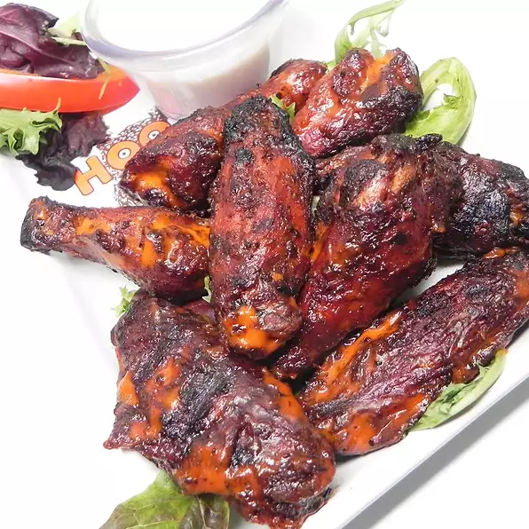

Smoked Chicken Hot Wings

Smoked chicken wings that are tender and delicious. Serve with celery sticks and blue cheese dressing.
Ingredients
Steps
- Heat a smoker to 225 degrees F (110 degrees C) according to manufacturer's directions.
- Mix 1 tablespoon salt, pepper, and Cajun seasoning in a small bowl to make dry rub. Sprinkle over chicken wings.
- Cook chicken wings in the preheated smoker until tender, 1 to 1 1/4 hour.
- Combine hot pepper sauce, butter, vinegar, Worcestershire sauce, garlic powder, and salt in a small saucepan over low heat. Cook, stirring often, until butter is melted and sauce is smooth. Remove from heat.
- Preheat an outdoor grill for medium-high heat and lightly oil the grate.
- Transfer smoked wings to a large bowl; stir in 1/2 of the sauce until wings are evenly coated.
- Grill coated wings until skin is browned and starting to get crispy, 4 to 5 minutes per side. Transfer to a large bowl and stir in remaining sauce until wings are well-coated.